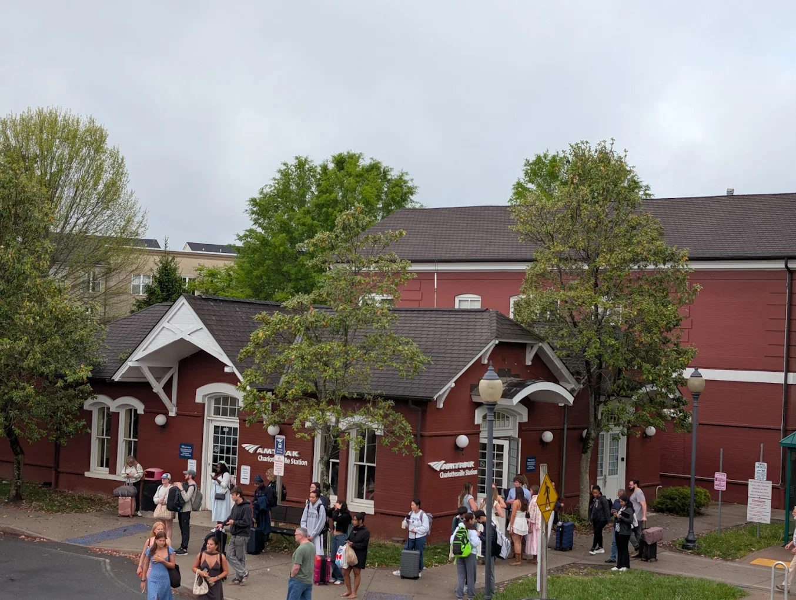
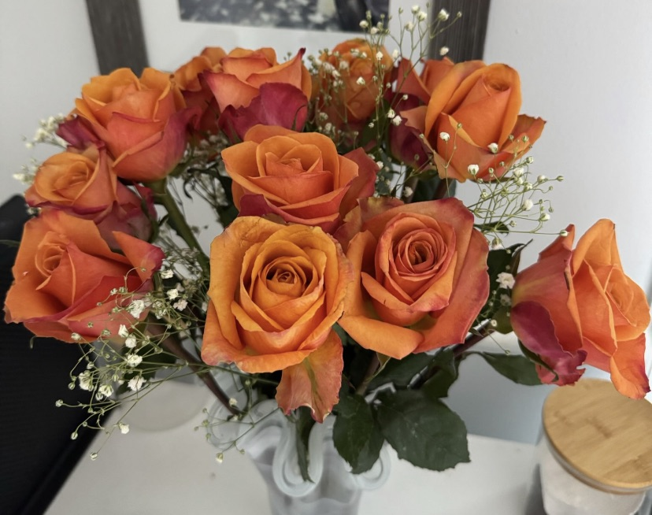
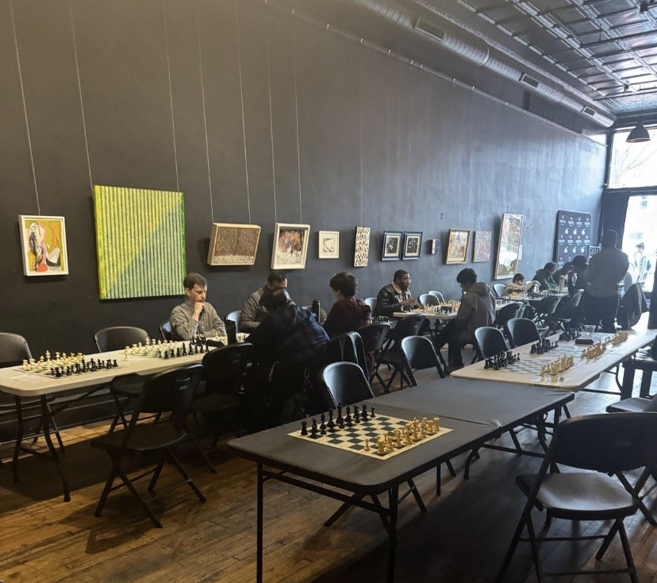
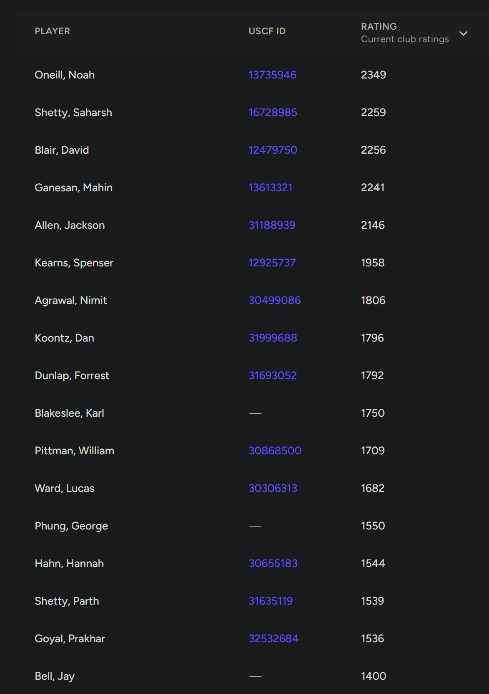
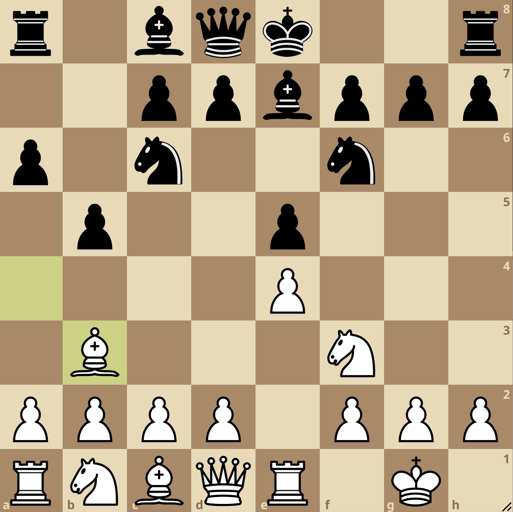
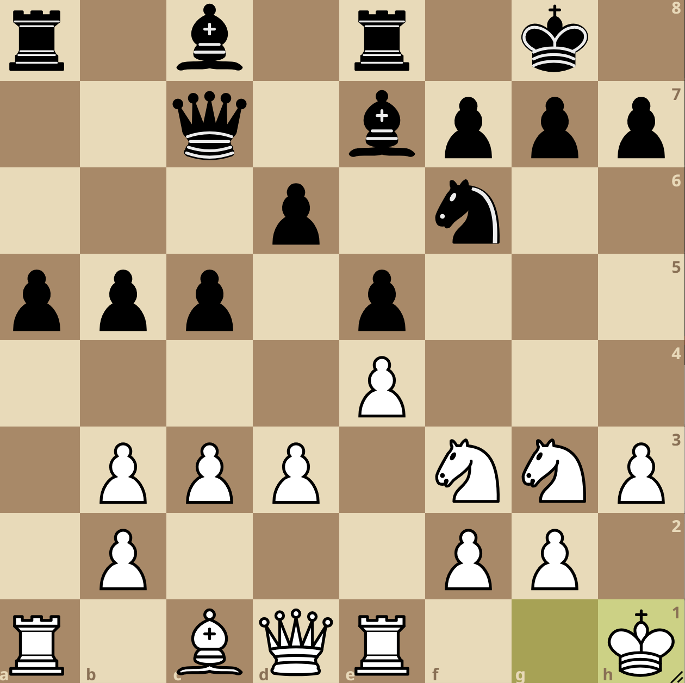

Some of the photos taken are not mine, as this is an event that occured before I began to blog.
The events before the tournament
I was coming back to Richmond to visit my mother for Valentine’s weekend since it was her birthday, but I had gotten screwed over the day prior as I was supposed to get carpooled by someone then they ghosted me after I asked for a confirmation. Feeling frustrated, I had to scramble out of my bed to buy an early-morning Amtrak ticket.
The train was scheduled to depart at 9:55 AM in Roanoke, so it wasn’t too fun considering that I had to wake up at around 6:30 AM to commute all the way to Roanoke by only using public transportation from Blacksburg.
I left my apartment at around seven to catch my first bus, which took me from my aparment to Virginia Tech’s main transfer bays, which was a 10 minute commute. I was still feeling incredibly sleepy as I usually never wake up this early (my classes usaully start past 11AM). I then boarded the second bus, which was called the “Smart Way Bus”, a rather unremarkable name.

The bus left promptly at 7:45AM; it was a 90 minute trip to get to the train station in Roanoke. The early morning sun had a distinct “warm-orangey” feel, it felt like a “filter” applied to everything it touched.
At around 9:15AM, I had arrived at the Third Street Station. The walking commute from the Station to the Amtrak platform was seven minutes, unlike where most stations are housed adajent to the train. I sat down in the waiting room of the station for around ten minutes, it was a little chilly outside and my train doesn’t come for another 40 minutes.
Not the smartest idea I’ve had, but not the worst.
I decided to walk alone from the station to the platform, but during the walk I was a bit on the edge as the place looked a little rougher than I hoped, turning my back every 20 seconds. Thankfully nothing happened and I was likely overreacting. I felt much more comfortable when I got onto the platform and saw many people waiting for the train to arrive.
The train arrived very slowly. I could have outwalked the train! I boarded the train and plopped myself into a seat. The seats on the Amtrak are very spacious, giving me plenty of leg room. It felt like a reward of some sort as the events prior certainly did not go my way.
The train ride was 2 and a half hours long, passing through Lynchburg and getting off at Charlottesville, giving me plenty of time to kill.
I went onto my laptop and played Hollow Knight: Silksong. I had recently beaten the most difficult challenge in the first game, “Pantheon of the Hallownest”. Often referred in the community as “p5”, it’s the fifth and final challenge of the gauntlet of bosses you had to fight consecutively, combining the first four Panthenons into one single Pantheon to make a grand total of 42 unique bosses to fight.
At around 12:30PM, I had arrived at my destination in Charlottesville. My mother actually drove an hour from Richmond to come and pick me up. Love you mom!

An aerial view of the Charlottesville train station. Credit: Sylvia LinLater in the day, we both went to Trader Joe’s to pick out some flowers for my mother. Unsurprisingly, the store was packed near the flower section as it was Valentine’s weekend. I picked out some warm colored roses with a cooler colored under-side(?) along with some filler (the small white buds you see in the image). And yes of course, I paid for it :3

The flowers I bought neatly placed in a vaseThe tournament
The tournament was scheduled to start at 10:15AM at the Black Iris Social Club in downtown Richmond. The venue interior was interesting, it featured what looked like a art gallery when you first enter, but there’s a whole bar connected if you go through the back door! The weather felt almost perfect, it was a light drizzle when I made to the venue at around ten.

The venue shown, during the latter moments of the second round. The tables on the left were the open section, and the tables on the right were the U1300 section.The schedule went as followed:
| Round | Time started |
|---|---|
| 1 | 10:15AM |
| 2 | 11:15AM |
| 3 | 1:00PM* |
| 4 | 2:00PM |
| 5 | 3:00PM |
*accounts for lunch break
There were two sections, the open section and the Under 1300 Chess.com / 1400 Lichess / 1000 USCF. Chess.com and Lichess are both chess websites with online rating. USCF however, is more offical where you can only gain or lose rating points in “USCF-rated” games, meaning that those games can only be played in in-person tournaments. This tournament is not USCF-rated.
I played in the open section because I was well above the 1300 Chess.com threshold, meaning that I will encounter much more difficult opponents. There were actually some prize money on the line!
| Place | Open Section | U1300 Chess.com Section |
|---|---|---|
| 1st | $100 | $65 |
| 2nd | $50 | $40 |
| 3rd | $25 | $20 |
Each game was 15+10, meaning that you start with 15 minutes and your time gets added by 10 seconds every time you make ae mode. Most people, including me, recorded their moves. However, in the latter stages in the game, there is not enough time to record moves and to play off increment. This is why most of the games I will have below do not have a clear-cut ending.
Going into this, I was a little nervous, probably because this is a new experience for me and I always get nervous whenever I am experiencing something new. After a round or two, I eased in comfortably.

The list of players registered and their respective ratingsMy only expectation going into this was to score at least one win as this was an extremely high rated tournament. The average rating was around 1780, more than two hundred points higher than what I currently have on Chess.com.
Quick lesson on chess notation:
Chess uses a coordinate system to describe moves. The board is an 8x8 grid where columns are labeled a-h (left to right) and rows are labeled 1-8 (bottom to top from White’s side).
Each piece has a letter:
- K = King
- Q = Queen
- R = Rook
- B = Bishop
- N = Knight (K was taken!)
- Pawns have no letter
A move is written as the piece letter followed by the destination square. So Nf3 means “Knight to f3” and Bb5 means “Bishop to b5”. Pawns are just the square alone, so e4 means “pawn to e4”.
Some special symbols:
- x = capture (Nxf3 = Knight captures on f3)
- + = check
- # = checkmate
- O-O = kingside castle
- O-O-O = queenside castle
If you don’t understand it thats okay too as this will be more focused on the emotions rather than the actual game itsself.
Round 1
I would have provided the pictures my mother have took during my games but I have not asked for my opponents consent, so unforunately there will be not many photos here
I was paired against Mahin Ganesan in the first round with the white pieces. He actually went to UVA and graduated a few years ago.
The game started off with:
- e4 e5 2. Nf3 Nc6 3. Bb5 a6 4. Ba4 Nf6 5. O-O Be7 6. Re1 b5 7. Bb3

During the game, my opponent mixed up his lines as he wanted to play d5 to play the Marshall Gambit but hasn’t castled yet. Since he touched his d-pawn already, he had to move it (touch-move rule), this is still a real line to play as black, but rather it being more tactical, it’s now more of a slow, manuvering game. The main line Marshall Gambit follows: 7. … O-O 8. c3 d5 9. exd5 Nxd5 10. Nxe5 Nxe5 11. Rxe5 c6 12. d4 Bd6 13. Re1 Qh4
d6 8. c3 Na5 9. h3 Nxb3 10. axb3 c5 11. d3 O-O 12. Nbd2 Qc7 13. Nf1 Re8 14. Ng3 a5 15. Kh1

Bd7 16. Qc2 Ra7 17. Be3 Rb8 18. Kg1 Raa8 19. Ra2 a4 20. bxa4 bxa4 21. Rc1 Rb7 22. Nd2 d5 23. Bg5 Qc6 24. d4 cxd4 25. cxd4 Qe6 26. exd5 Nxd5 27. Be3 Nb4 *WIP :3
Last modified on 2026-03-20